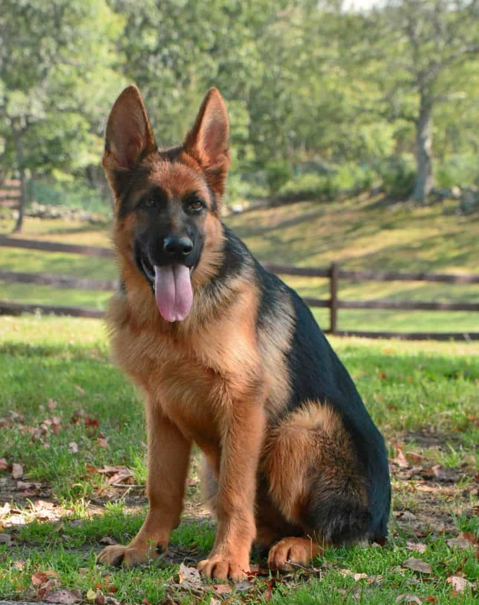
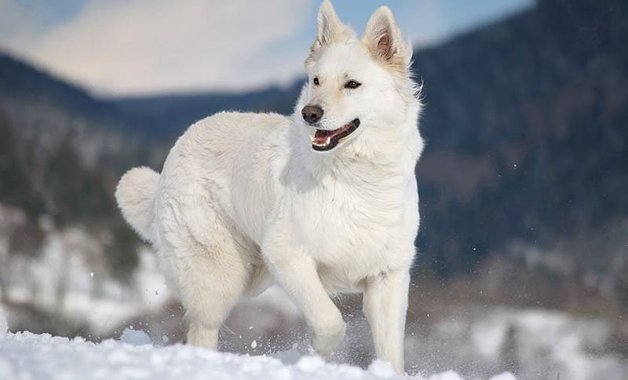
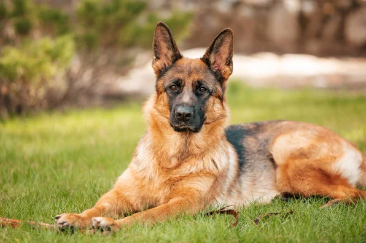
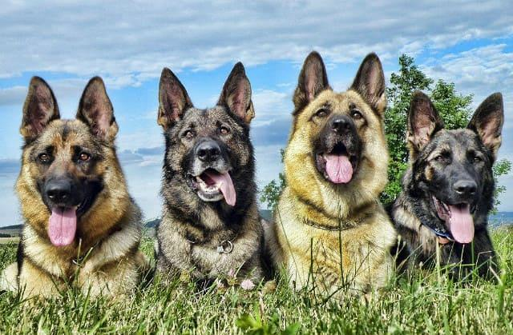

Масті німецьких вівчарок:

Це найпоширеніший тип. Він зустрічається у переважної більшості особин.
Являє собою чорну пляму на спині у вигляді латинської букви V, яке може доходити до живота, боків,
ліктів і верхньої частини хвоста. Нижня половина тулуба, шия, грудна клітка і кінцівки мають світлий
відтінок. Невід’ємною частиною чепрачної масті є так звана маска. Це чорний пігмент, що поширюється на
морду,а також вушні раковини.Браком вважається не тільки відсутність «маски», а й її слабка пігментація
Те саме можна сказати й проблідого чепрака.Відтінок низу може бути будь-яким. Однак найкращий темний
пігмент.
Як зрозуміло з назви, такі пси мають насичену чорну шерсть. Цей різновид найбільш рідкісний – всього близько
3% особин народжуються з таким кольором.Якщо у цуценяти німецької вівчарки знайдуть найменше вкраплення
іншого відтінку, це буде вважатися відхиленням від норми. Однозначний брак – це білі відмітини, а також
світлі кігті та ніс. На відміну від інших різновидів, чорний малюк разом з дорослішанням не втрачатиме
інтенсивність кольору.

Чорно-підпалий відтінок не відноситься до самостійного типу. Швидше це різновид чепрачної масті.
«Німець» даного забарвлення майже чорний, але з деякими вкрапленнями на животі та кінцівках більш світлого
відтінку.Допустимі білі плями на грудях, з боків морди та на бровах.На відміну від чорних, темно-підпалі
німецькі вівчарки світлішають з кожним линянням.Також цей відтінок втрачає інтенсивність в наступному
поколінні.
Браковані масті німецьких вівчарок:
Відхилення від норми бувають досить рідко з урахуванням сучасного розвитку племінного розведення
Однак передбачити генетичні хитросплетіння до кінця неможливо. Тому щеня з бракованим тоном може
з’явитися на світло у здорової пари яка відповідає всім нормам.Такі особини не беруть участь у
виставках і не допускаються до в’язки. Однак у якості відданого друга вони нітрохи не гірше,
ніж їх титуловані та сертифіковані побратими.
Білі «німці»
Таке явище можливо, якщо у цуценяти проявився рецесивний білий ген від обох батьків. Ці собаки не
є альбіносами у звичному сенсі цього слова.У них чорні носи, кігті, подушечки лап, а також характерні
темні очі.
Жовті німецькі вівчарки
Інакше їх називають рудими. Попри гарний зовнішній вигляд, вони теж вважаються браком, тому що не відповідають встановленому чепрачному типу.Не можна плутати рудих вівчарок і сертифікованих зонарно-рудих.
Золотисті «німці»
Дане забарвлення є підтипом бракованого жовтого забарвлення. Виявляється при наявності яскравого пігменту.Шерсть у таких собак здається дуже світлою, але відливає золотом на сонці.
Сірі вівчарки
Забарвлення можливий завдяки генетичної мутації, що відповідає за чорний пігмент. Також іменується блакитним.
Плямисте забарвлення німецької вівчарки
Каже само за себе. Шерсть таких німецьких вівчарок може мати безліч плям, причому самих різних тонів і розмірів. Характерно, що дані відмітини часто розташовані в хаотичному порядку. Зазвичай плямисте забарвлення проявляється у метисів «німців» і безпородних собак.
Чалі вівчарки
Дане забарвлення не є самостійним різновидом. Воно виникає в результаті вікових змін, коли шерсть собаки
блідне і
стає менш насиченою. Коли сивина займає більшу частину площі, можна сміливо говорити про чале
забарвлення.Бажаючим
завести німецьку вівчарку незвичайного забарвлення завжди варто пам’ятати про два моменти:
- Цуценята рідкісної масті, що відповідає стандарту (чорні та зонарні), будуть значно дорожче всім звичного чепрачного;
- Собаки бракованих мастей не допускаються до участі у виставках і до племінного розведення.
Діти та собаки
Німецька вівчарка – чудовий супутник для дітей, вони є дуже обережні з маленькими дітьми і водночас
готові стати на їхню охорону. Звичайно, можуть траплятися ситуації, в яких пес, ненароком, може наступити
на маленьку
дитину. Якщо привчати цуценя з малку, то воно добре ладить з іншими тваринами. Придбавши дорослу
вівчарку, Вам може
знадобитися допомога професіоналів, щоб адаптувати тварини до життя з іншими хатніми улюбленцями.